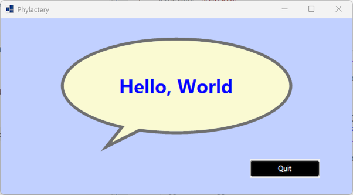
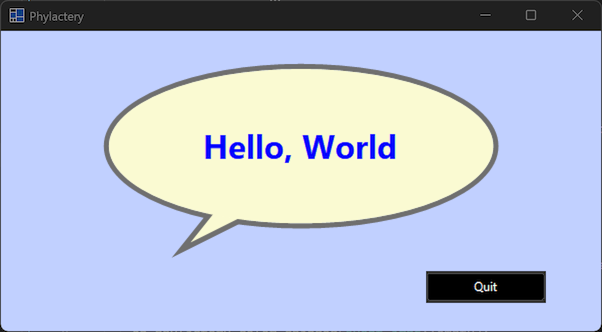
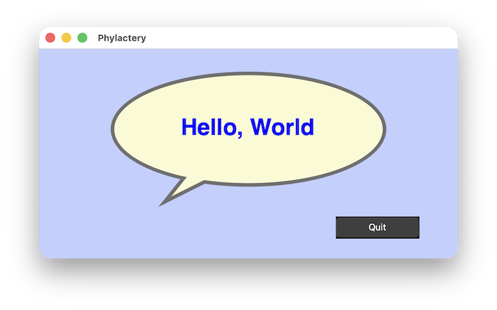
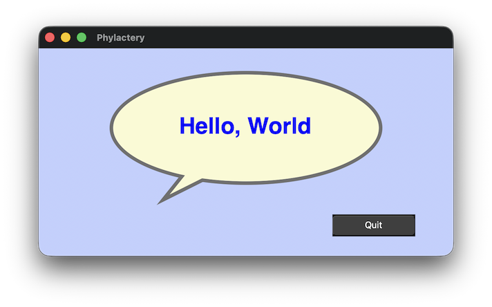

|
xtd
1.0.0
|
Loading...
Searching...
No Matches
phylactery.cpp
demonstrates how to create a custom control with xtd::forms::user_control control.
- Windows


- macOS


- Gnome


#include <xtd/xtd>
class phylactery : public user_control {
public:
[[nodiscard]] const color& border_color() const noexcept {return border_color_;}
phylactery& border_color(const color& value) noexcept {
border_color_ = value;
on_border_color_changed(event_args::empty);
return self_;
}
[[nodiscard]] const single& border_width() const noexcept {return border_width_;}
phylactery& border_width(single value) noexcept {
border_width_ = value;
on_border_width_changed(event_args::empty);
return self_;
}
[[nodiscard]] const color& phylactery_color() const noexcept {return phylactery_color_;}
phylactery& phylactery_color(const color& value) noexcept {
phylactery_color_ = value;
on_phylactery_color_changed(event_args::empty);
return self_;
}
event<phylactery, event_handler> border_color_changed;
event<phylactery, event_handler> border_width_changed;
event<phylactery, event_handler> phylactery_color_changed;
protected:
virtual auto on_border_color_changed(const event_args& e) -> void {
invalidate();
auto border_color_changed_safe = border_color_changed;
if (border_color_changed_safe.is_empty()) return;
border_color_changed_safe(self_, e);
}
virtual auto on_border_width_changed(const event_args& e) -> void {
invalidate();
auto border_width_changed_safe = border_width_changed;
if (border_width_changed_safe.is_empty()) return;
border_width_changed_safe(self_, e);
}
virtual auto on_phylactery_color_changed(const event_args& e) -> void {
invalidate();
auto phylactery_color_changed_safe = phylactery_color_changed;
if (phylactery_color_changed_safe.is_empty()) return;
phylactery_color_changed_safe(self_, e);
}
auto on_paint(paint_event_args& e) -> void override {
user_control::on_paint(e);
auto clip = e.clip_rectangle();
auto ellipse = rectangle_f {border_width_, border_width_, clip.width - 2 * border_width_, clip.height * 0.85f - 2 * border_width_};
auto tip = array<point_f> {{clip.x + 60.0f + clip.width * 0.15f, clip.height - clip.height * 0.25f - 2 * border_width_}, {clip.x + 60.0f + clip.width * 0.05f, clip.height - 2 * border_width_}, {clip.x + 60.0f + clip.width * 0.30f, clip.height - clip.height * 0.25f - 2 * border_width_}};
e.graphics().smoothing_mode(xtd::drawing::drawing_2d::smoothing_mode::anti_alias);
e.graphics().text_rendering_hint(xtd::drawing::text::text_rendering_hint::clear_type_grid_fit);
e.graphics().draw_ellipse(drawing::pen {border_color_, border_width_}, ellipse);
e.graphics().fill_polygon(solid_brush {phylactery_color_}, tip);
e.graphics().draw_polygon(drawing::pen {border_color_, border_width_}, tip);
e.graphics().fill_ellipse(solid_brush {phylactery_color_}, ellipse.inflate(ellipse, size_f {-border_width_ / 2.0f, -border_width_ / 2.0f}));
e.graphics().draw_string(text(), {system_fonts::default_font(), clip.height / 8.0f, font_style::bold}, solid_brush {fore_color()}, ellipse, string_format().alignment(string_alignment::center).line_alignment(string_alignment::center));
}
private:
color border_color_ = color::dark_gray;
single border_width_ = 4.0f;
color phylactery_color_ = color::white;
};
class form1 final : public form {
public:
form1() {
.text("Phylactery")
.back_color(color::from_argb(0xffc1d0ff))
.client_size({600, 300})
.minimum_client_size({300, 150})
.controls().add_range({hello_world_phylactery_, quit_button_});
hello_world_phylactery_
.border_color(color::from_argb(0xFF6F6F6F))
.border_width(5.2f)
.phylactery_color(color::light_goldenrod_yellow)
.text("Hello, World")
.bounds({100, 30, 400, 200})
.fore_color(color::blue)
.anchor(anchor_styles::left | anchor_styles::top | anchor_styles::right | anchor_styles::bottom);
quit_button_
.text("Quit")
.bounds({425, 240, 120, 32})
.back_color(color::black)
.fore_color(color::white)
.anchor(anchor_styles::right | anchor_styles::bottom)
.click += {*this, &form::close};
}
private:
phylactery hello_world_phylactery_;
button quit_button_;
};
auto main() -> int {
application::run(form1 {});
}
#define self_
The self_ expression is a reference value expression whose value is the reference of the implicit obj...
Definition self.hpp:20
xtd::forms::style_sheets::control button
The buttton data allows you to specify the box of a button control.
Definition button.hpp:25
@ clear_type_grid_fit
Each character is drawn using its glyph ClearType bitmap with hinting. The highest quality setting....
Definition text_rendering_hint.hpp:32
@ anti_alias
Specifies that pixels are offset by -.5 units, both horizontally and vertically, for high speed antia...
Definition smoothing_mode.hpp:35
Generated on for xtd by Gammasoft. All rights reserved.